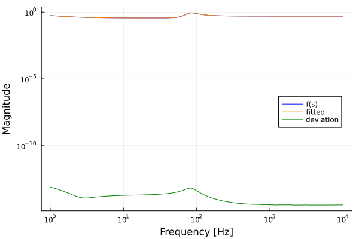
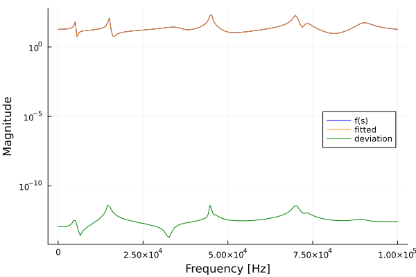
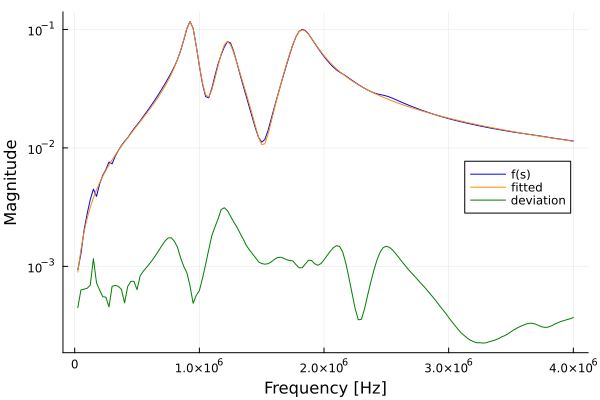
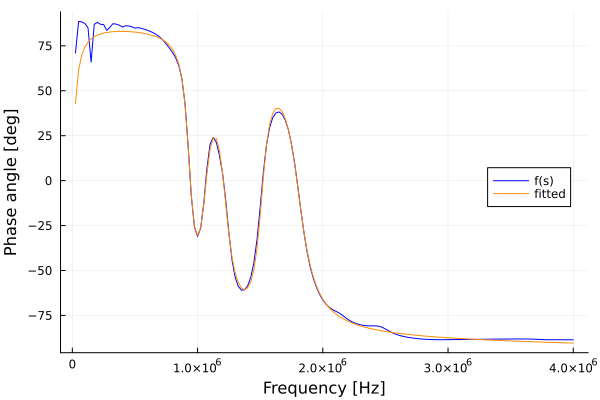
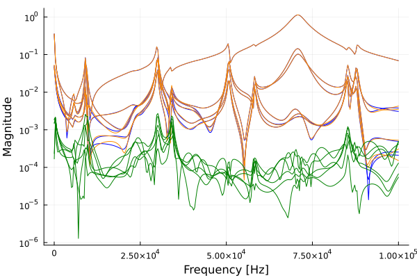
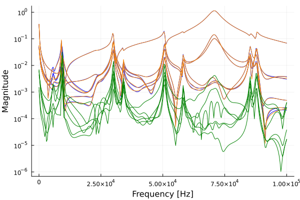
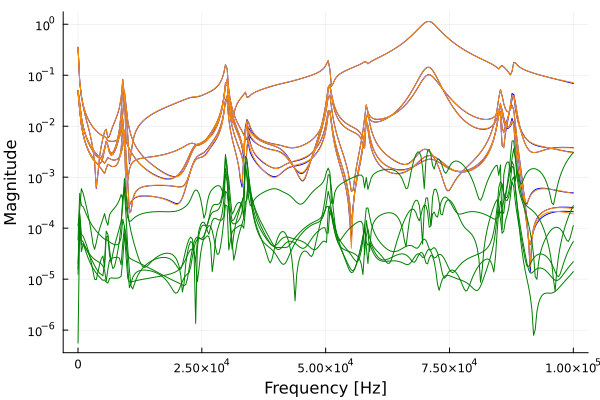
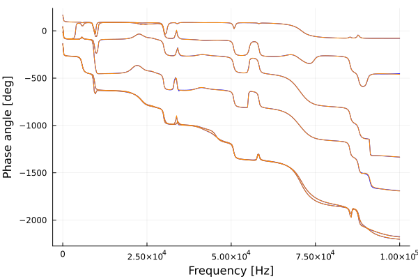

RationalVectorFitting.jl
Documentation for RationalVectorFitting.jl, a Fast Relaxed Vector Fitting algorithm in Julia.
Given a transfer function $f(s) = y$, the Vector Fitting algorithm tries to find a rational approximation
\[f(s) \approx \sum_{n=1}^N \frac{r_n}{s - a_n} + d + s h\]
where $s$ is the complex frequency, $r_n$ are the complex residues, $a_n$ are the complex poles, $d$ and $h$ are real constants.
The transfer function can be a vector $f(s) = [y_1, \dots, y_m]$ and the Vector Fitting algorithm will fit the response using the same set of poles $a_n$ for all $y_m$.
A rational representation of a transfer function makes it easier to find a state space canonical realization of a system and to perform convolutions.
Examples
Example 1
This first example fits an order 3 smooth function using a set of real initial poles.
using RationalVectorFitting
using Plots
freq = exp10.(range(0, 4, length = 101)) # logspace
s = 2im * pi * freq
poles1 = [-5.0, -100 - 500im, -100 + 500im]
residues1 = [2.0, 30 - 40im, 30 + 40im]
d1 = 0.5
h1 = 0.0
f1 = rational(s, poles1, residues1, d1, h1)
init_poles = -2pi * exp10.(range(0, 4, length = 3))
poles, residues, d, h, fitted, error_norm = vector_fitting(s, f1, init_poles)
p1 = plot(
freq,
abs.(f1),
label = "f(s)",
linecolor = :blue,
xlabel = "Frequency [Hz]",
ylabel = "Magnitude",
xaxis = :log,
yaxis = :log,
legend = :right,
)
plot!(freq, abs.(fitted), label = "fitted", linecolor = :darkorange)
plot!(freq, abs.(f1 - fitted), label = "deviation", linecolor = :green)convergence achieved at iter. = 2
error_norm = 2.4407697419070694e-13
Example 2
Fitting an order 18 function.
using RationalVectorFitting
using Plots
poles1 = 2π .* [
-41000,
-4500,
-100 - 5000im,
-100 + 5000im,
-120 - 15000im,
-120 + 15000im,
-3000 - 35000im,
-3000 + 35000im,
-200 - 45000im,
-200 + 45000im,
-1500 - 45000im,
-1500 + 45000im,
-500 - 70000im,
-500 + 70000im,
-1000 - 73000im,
-1000 + 73000im,
-2000 - 90000im,
-2000 + 90000im,
]
residues1 = 2π .* [
-83000,
-3000,
-5 - 7000im,
-5 + 7000im,
-20 - 18000im,
-20 + 18000im,
6000 - 45000im,
6000 + 45000im,
40 - 60000im,
40 + 60000im,
90 - 10000im,
90 + 10000im,
50000 - 80000im,
50000 + 80000im,
1000 - 45000im,
1000 + 45000im,
-5000 - 92000im,
-5000 + 92000im,
]
d1 = 0.2
h1 = 2e-5
freq = (range(0, 1e5, length = 200))
s = 2im * pi * freq
f1 = rational(s, poles1, residues1, d1, h1)
init_poles = 2π .* [
-1e-2 + 1im,
-1.11e2 + 1.11e4im,
-2.22e2 + 2.22e4im,
-3.33e2 + 3.33e4im,
-4.44e2 + 4.44e4im,
-5.55e2 + 5.55e4im,
-6.66e2 + 7.77e4im,
-8.88e2 + 8.88e4im,
-1e3 + 1e5im,
]
# now we add the missing half of complex pairs
real_poles = filter(isreal, init_poles)
complex_poles = filter(!isreal, init_poles)
init_poles = sort!([real_poles; complex_poles; conj(complex_poles)], by = cplxpair)
poles, residues, d, h, fitted, error_norm = vector_fitting(s, f1, init_poles)
p1 = plot(
freq,
abs.(f1),
label = "f(s)",
linecolor = :blue,
xlabel = "Frequency [Hz]",
ylabel = "Magnitude",
yaxis = :log,
legend = :right,
)
plot!(freq, abs.(fitted), label = "fitted", linecolor = :darkorange)
plot!(freq, abs.(f1 - fitted), label = "deviation", linecolor = :green)
Example 3
Order 6 fitting of the measured admittance function from a distribution transformer, which we took from SINTEF's VFIT3.
using RationalVectorFitting
using Plots
fid1 = split.(readlines("03PK10.txt"))
f = zeros(ComplexF64, 160)
for k = 1:160
A1 = parse(Float64, fid1[k+1][1])
A2 = parse(Float64, fid1[k+1][2])
f[k] = A1 * exp(1im * A2 * pi / 180)
end
w = 2pi * range(0, 10e6, length = 401)
w = w[2:161]
s = 1im .* w
freq = imag(s) ./ (2pi)
N = 6 # Order of approximation
init_poles = recommended_init_poles(s, N)
poles, residues, d, h, fitted, error_norm = vector_fitting(s, f, init_poles)
p1 = plot(
freq,
abs.(f),
label = "f(s)",
linecolor = :blue,
xlabel = "Frequency [Hz]",
ylabel = "Magnitude",
yaxis = :log,
legend = :right,
)
plot!(freq, abs.(fitted), label = "fitted", linecolor = :darkorange)
plot!(freq, abs.(f - fitted), label = "deviation", linecolor = :green)
p2 = plot(
freq,
rad2deg.(angle.(f)),
label = "f(s)",
linecolor = :blue,
xlabel = "Frequency [Hz]",
ylabel = "Phase angle [deg]",
legend = :right,
)
plot!(freq, rad2deg.(angle.(fitted)), label = "fitted", linecolor = :darkorange)

Example 4
Order 50 fitting of the first column of a six-terminal Frequency Domain Network Equivalent (FDNE) system. We took the data from SINTEF's VFIT3.
using RationalVectorFitting
using Plots
open("fdne.txt", "r") do fid1
Nc = parse(Int, readline(fid1))
Ns = parse(Int, readline(fid1))
global s = Array{ComplexF64}(undef, Ns)
global bigY = Array{ComplexF64}(undef, Nc, Nc, Ns)
for k = 1:Ns
s[k] = complex(0, parse(Float64, readline(fid1)))
for row = 1:Nc
for col = 1:Nc
a1 = parse(Float64, readline(fid1))
a2 = parse(Float64, readline(fid1))
bigY[row, col, k] = complex(a1, a2)
end
end
end
end
f = transpose(bigY[:, 1, :]) # just the 1st column
freq = imag(s) ./ (2pi)
Np = 50 # order of fitting
init_poles = recommended_init_poles(s, Np)
poles, residues, d, h, fitted, error_norm = vector_fitting(s, f, init_poles)
@show error_normNow we plot the result. Blue lines are the response being fitted, orange lines are the fitted values and green lines are the deviations.
p1 = plot(
freq,
abs.(f),
label = "f(s)",
linecolor = :blue,
xlabel = "Frequency [Hz]",
ylabel = "Magnitude",
yaxis = :log,
legend = false,
)
plot!(freq, abs.(fitted), label = "fitted", linecolor = :darkorange)
plot!(freq, abs.(f - fitted), label = "deviation", linecolor = :green)
savefig(p1, "ex4-1.svg")
That does not look very good. What if we try with a weighting $w(s)$?
\[w(s) = \frac{1}{\sqrt{|f(s)|}}\]
weight = @. 1.0 / sqrt(abs(f))
poles, residues, d, h, fitted, error_norm = vector_fitting(s, f, init_poles, weight)
@show error_norm
p1 = plot(
freq,
abs.(f),
label = "f(s)",
linecolor = :blue,
xlabel = "Frequency [Hz]",
ylabel = "Magnitude",
yaxis = :log,
legend = false,
)
plot!(freq, abs.(fitted), label = "fitted", linecolor = :darkorange)
plot!(freq, abs.(f - fitted), label = "deviation", linecolor = :green)
Damn, it got worse :(
What if we disable the relaxed non-triviality constraint?
weight = @. 1.0 / sqrt(abs(f))
poles, residues, d, h, fitted, error_norm = vector_fitting(s, f, init_poles, weight; relaxed = false)
@show error_norm
p1 = plot(
freq,
abs.(f),
label = "f(s)",
linecolor = :blue,
xlabel = "Frequency [Hz]",
ylabel = "Magnitude",
yaxis = :log,
legend = false,
)
plot!(freq, abs.(fitted), label = "fitted", linecolor = :darkorange)
plot!(freq, abs.(f - fitted), label = "deviation", linecolor = :green)
In some frequency ranges the fitting got better, but worse in others when compared to the first figure.
Finally, let's plot the phase angle using a helper function from the package DSP.jl
import DSP
f_phase = rad2deg.(DSP.unwrap(angle.(f), dims=1))
p1 = plot(
freq,
f_phase,
label = "f(s)",
linecolor = :blue,
xlabel = "Frequency [Hz]",
ylabel = "Phase angle [deg]",
legend = false,
)
fitted_phase = rad2deg.(DSP.unwrap(angle.(fitted), dims=1))
plot!(freq, fitted_phase, label = "fitted", linecolor = :darkorange)error_norm = 0.01554216852819071
error_norm = 0.06683990463126742
error_norm = 0.023247057328119547
Unfortunately, the Vector Fitting algorithm relies a lot on trial and error of the user. The fitting could be better if a higher order was used, but that has a tendency to lead to numerically unstable state-space models. Hence, we try to do a low order fitting first.
There are efforts in the literature to make the algorithm more automatic (which some day may be incorporated into this package), see [4].
Bibliography
[1] B. Gustavsen and A. Semlyen, "Rational approximation of frequency domain responses by vector fitting," in IEEE Transactions on Power Delivery, vol. 14, no. 3, pp. 1052-1061, July 1999, doi: 10.1109/61.772353.
[2] B. Gustavsen, "Improving the pole relocating properties of vector fitting," in IEEE Transactions on Power Delivery, vol. 21, no. 3, pp. 1587-1592, July 2006, doi: 10.1109/TPWRD.2005.860281.
[3] D. Deschrijver, M. Mrozowski, T. Dhaene and D. De Zutter, "Macromodeling of Multiport Systems Using a Fast Implementation of the Vector Fitting Method," in IEEE Microwave and Wireless Components Letters, vol. 18, no. 6, pp. 383-385, June 2008, doi: 10.1109/LMWC.2008.922585.
[4] A. M. Smith, S. D'Arco, J. A. Suul and B. Gustavsen, "Improved Pole Placement and Compaction of MIMO Vector Fitting Applied to System Identification," in IEEE Transactions on Power Delivery, vol. 39, no. 2, pp. 1259-1270, April 2024, doi: 10.1109/TPWRD.2024.3364836.